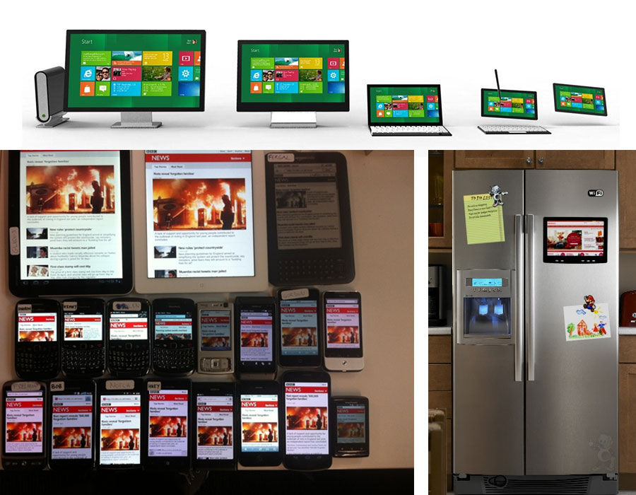
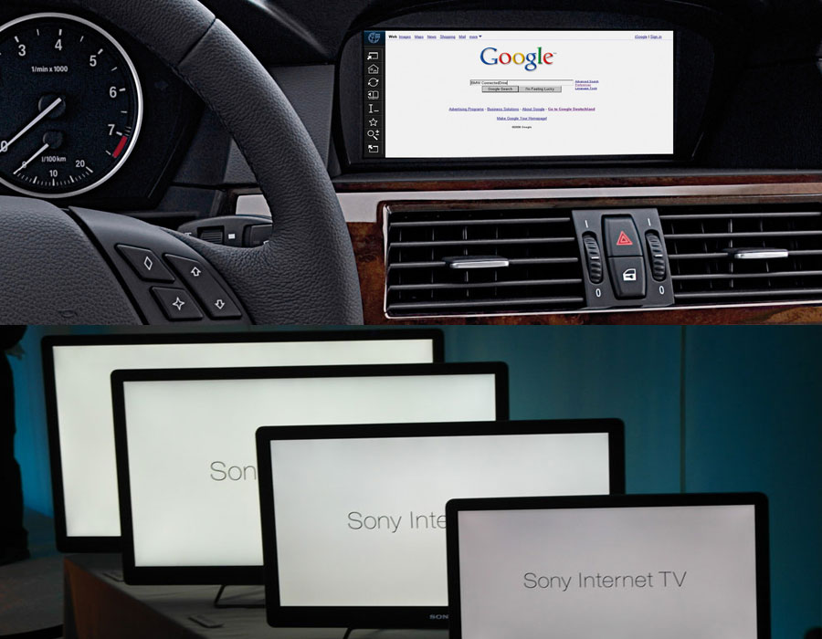

Moving Forward
With A Mobile Web
About Me
Jon Low / @jonlowforever
We strategically help organizations brand, market, engage & operate in the digital age
But first a Story
... from the past


It's 2013 ...
What has happened since the last tech boom?

Mobile has eaten all forms
of mass media
These industries, these forms of mass media have been changed fundamentally and totally disrupted by mobile.
Mobile is the most powerful form of mass media ever to enter this planet
371k
Babies born everyday
378k
iPhones sold everyday
562k
iOS devices
1M
Android devices
350k
Blackberry + Nokia
2+ million
Mobile devices sold every day
It's not that these devices are just coming so quickly, but they're being adopted faster than ever before
Mass Market Adoption
How long till 40% of population has the technology
- Telephone (40)
- Electricity (15)
- Computer (14)
- Mobile (7)
- Internet (5)
Smart Phone (3)
Mobile is Unique
- always with you
- always on
- built-in payment mechanism
- always at the point of inspiration
- most accurate audience measurement
- captures social context
- augmented reality
- digital interface to reality
People are doing more on their mobiles
... like buying diamonds
2x Conversion Rate
“Mobile was the final frontier in the access revolution. It has erased the digital divide. A mobile device is the internet for many people.”
Susanah Fox
Pew Research
When we think about web products and services, we should think about the
mobile experience first
Future Friendly Content
This isn't the internet

This IS the internet ...
... and this IS the internet
What's next?
Define Responsive Design
Fine CitizensThe goal of this is to create a more optimal experience across more contexts.